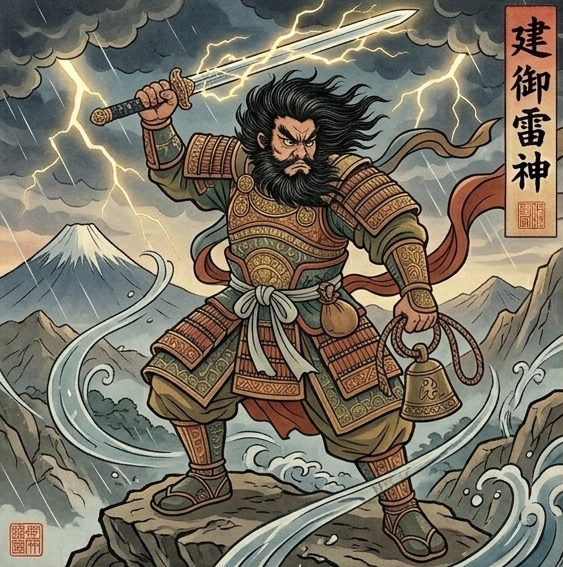

あなたは本来
迷わない方です。
「こうする」と決めたら
白黒はっきりつけて
前に進める
そんな決断力をお持ちです。
優柔不断な人を見ていると
内心ちょっと
イライラしてしまう。
白黒つけずに
ダラダラ引きずるのは
本当は得意ではない。
そしてもう一つ
お金を「形」にして
受け取る回路が
少し細くなっています。
頑張って動いているのに
稼いだはずのものが
なぜか手元に
残りにくい。
その物足りなさが
静かに積み重なっています。
なぜ、お金の不安が
消えないのか。
あなたには
人のために自分の力を
差し出してしまう
そんな優しさをお持ちです。
頼られると断れず
自分の分より先に
相手の分を
用意してしまう。
その優しさが
知らないうちに
あなたの手元から
豊かさを連れ出しています。
だから今
「迷わず決めて進める自分」と
「気づけば人に譲ってしまう自分」が
心の中でぶつかって
答えを出させてくれないんです。
でも、大丈夫です。
その答えの出し方を
あなたを守る神様が
ちゃんと視せてくれています。
あなたを守っているのは
建御雷神(たけみかづちのかみ)。
最強の武の神
雷を司る神様です。

迷いを雷で打ち払い
一度決めたら全力で動く
恐れを知らない力があります。
そんな力を持つ神様の
加護を受けているので
なお様はこれまでも
人生の大事な場面で
「これだ」と決めれば
誰よりも早く
動いてこられました。
今、あなたの白銀のオーラは
研ぎ澄まされた刃のまま
鞘に入れっぱなしになっています。
刀は本来
使われて初めて
輝きを放つもの。
あなたの中にも
まだ使いきれていない
決断力と実行力が
静かに眠っています。
その刃は、あなたが
「自分のために力を使っていい」
と決めるまで
静かに鞘の中で
出番を待っています。
このまま進んで
本当にお金に困らず
過ごしていけるのか。
今の仕事の先に
安定した豊かさが
待っているのか。
なお様の人生は
これからどこへ
向かっていくのか。
私には、視えています。
ただ、これは
守護神からお預かりしている
なお様のこれからを動かす
重たい言葉です。
本式守護霊視鑑定の場で
丁寧にお伝えさせていただきますね。
胸の中で起きているぶつかりは
時間が経てば自然に片付くもの
ではありません。
不安を抱えたまま
今年の後半を越え
来年を迎えた時。
「お金に振り回されない
自分」でいられるか
「結局、同じ不安を
繰り返す自分」でいるか。
その差は、今この瞬間に
あなたが「自分の状態を
正しく知るか」で決まります。
このまま気づかずにいると
人のために力を差し出す
今の流れは少しずつ
当たり前になり
なお様の暮らしに
馴染んでいきます。
そうなる前に
あなたにちゃんと
知っていただきたいことが
私には視えています。
本式守護鑑定で
なお様にお渡しするのは
今のもやもやが
いつ、どんな
きっかけで
晴れていくのか。
具体的な時期を
お伝えします。
なお様の手元に
豊かさが留まるための
なお様だけの
お金との向き合い方を
お渡しします。
その鋭い決断力を
仕事とお金の流れの中で
どう使えばいいのか。
具体的にお伝えします。
今日からできる
守護を高める方法を
お渡しします。
なお様ご自身の手で
未来を選び取るための鑑定です。
その一歩を
ここから踏み出してください。
今、なお様のために
運命の扉は
最も大きく開かれています。
この巡り合わせは
残念ながら永遠ではありません。
私からのこのお手紙を
受け取ってから
24時間以内に一歩踏み出すと
止まっていた運命は
最もなめらかに
動き始めます。
ご自身の手で
最高の未来を選び取りたいと
心から願うなお様へ。
通常9,800円のところ
今回に限り、特別価格4,980円で
本式守護霊視鑑定を行います。
1日限定3名までしかお受けできません
リンク先が表示されない場合
本日分は締切ですのでご了承ください。
お申し込み後、
購入時のお名前をお知らせください。
1日以内に、
あなただけの鑑定書をお届けします。
なお様の物語が
なお様らしい結末を迎えることを
私は守護の声を通して
すでに知っています。
ご縁に、心から感謝を込めて。